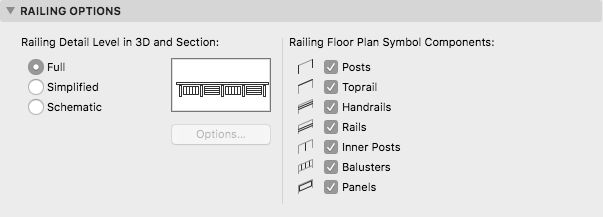

API_RailingModelViewOptions
Represents the model view options of Railings made with Railing Tool. The entire structure is Archicad only.
typedef struct {
char railing3DDetailLevel;
char filler_1[7];
bool railing2DDisplayCompPosts;
bool railing2DDisplayCompTopRail;
bool railing2DDisplayCompHandrails;
bool railing2DDisplayCompRails;
bool railing2DDisplayCompInnerPosts;
bool railing2DDisplayCompBalusters;
bool railing2DDisplayCompPanels;
bool filler_2;
API_AttributeIndex railingSchemeSurfaceIndex;
API_AttributeIndex railingSchemeCutLineIndex;
short railingSchemeCutLinePenIndex;
API_AttributeIndex railingSchemeUncutLineIndex;
short railingSchemeUncutLinePenIndex;
short filler_3[3];
} API_RailingModelViewOptions;
Members
- railing3DDetailLevel
- Detail level of railings in 3D display.
Possible values:API_Railing3DDetail_Full,API_Railing3DDetail_Simplified,API_Railing3DDetail_Schematic. - railing2DDisplayCompPosts
- Posts are visible in Floor Plan Visualization.
- railing2DDisplayCompTopRail
- Top rails are visible in Floor Plan Visualization.
- railing2DDisplayCompHandrails
- Handrails are visible in Floor Plan Visualization.
- railing2DDisplayCompRails
- Rails are visible in Floor Plan Visualization.
- railing2DDisplayCompInnerPosts
- Inner posts are visible in Floor Plan Visualization.
- railing2DDisplayCompBalusters
- Balusters are visible in Floor Plan Visualization.
- railing2DDisplayCompPanels
- Panels are visible in Floor Plan Visualization.
- railingSchemeSurfaceIndex
- Index of the Surface attribute to use in Schematic 3D Display Detail.
- railingSchemeCutLineIndex
- Index of the Line attribute to use in Schematic 3D Display Detail as Cut Line.
- railingSchemeCutLinePenIndex
- Index of the Pen in the current Pen Table to use in Schematic 3D Display Detail as the Cut Line Pen.
- railingSchemeUncutLineIndex
- Index of the Line attribute to use in Schematic 3D Display Detail as Uncut Line.
- railingSchemeUncutLinePenIndex
- Index of the Pen in the current Pen Table to use in Schematic 3D Display Detail as the Uncut Line Pen.
Remarks
These settings correspond to the relevant items in the Document/Set Model View/Model View Options dialog/Railing Options page.

Requirements
- Version: API 21 or later
- Header: APIdefs_Environment.h
See Also
API_AttributeIndex, API_ModelViewOptions, APIEnv_GetViewOptionsID, APIEnv_ChangeViewOptionsID,
API_NavigatorView,
API Types